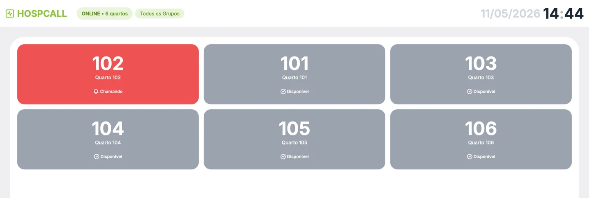

Hospcall: nurse-call system for an elder-care home
A call system piloted for six months at a geriatric care association, built by a team of seven UNIVESP students.
My part: I worked on every stage with the team: the requirement meetings with the AGERIP staff, the PostgreSQL data model and audit table, the API and real-time channel, the React screens for tablets, TVs and admin, deployment and the six-month pilot follow-up.
Team code, not public
60caregivers registered in a six-month pilot at AGERIP

- Decision it supports
- Who answers each call, and what the home can prove afterwards.
- Who uses it
- Nursing staff and managers of a long-term care home for older people.
- What an error costs
- An unanswered or unrecorded call leaves a resident without care and the home without evidence when a family complains.
- How it creates value
- A call appears at once in every corridor, the check-in records who answered, and every administrative change is audited.
- Risks and limits
- A pilot in three rooms with no response-time measurement; the next phase depends on the 11 requirements raised with the staff.
Problem
At AGERIP, a geriatric care association in São José do Rio Preto, a resident who needed help depended on a caregiver walking past the room, and the shift record depended on handwritten notes. Refused calls, hand-overs in the middle of a call and care by staff outside the roster left no trace. Commercial nurse-call systems need dedicated wiring and maintenance contracts a charity cannot pay for.
Solution
A web system on ordinary hardware: a tablet in each room opens the call, TV panels in the corridors show it in real time, caregivers check in with a PIN, and the nursing team manages calls, devices and exports from an admin page. Every administrative intervention is written to an immutable audit table instead of overwriting the call.
How it works
- Requirements came from meetings with the general manager, the head nurse and a nurse at AGERIP.
- Their feedback changed the product: PIN always available, tablets that register themselves, a TV grid configured remotely, and the open-time counter removed because it made the staff anxious.
- The real-time channel reconnects on its own after a dropped connection, tested under induced failures.
Results
| 56 | calls in the pilot, October 2025 to March 2026, 41 completed |
| ≤ 39 ms | median reconnection of the real-time channel; 67 ms at worst |
| 11 | new requirements from the final review meeting with the care team, in May 2026 |
Limits
Three rooms were instrumented and the response time to a call was not recorded, so the pilot shows adoption and stability, not a faster response. Tests were manual. The code belongs to the team and is not public.
Stack
React, Node.js / Bun, Express, PostgreSQL, Redis, WebSocket, Prisma